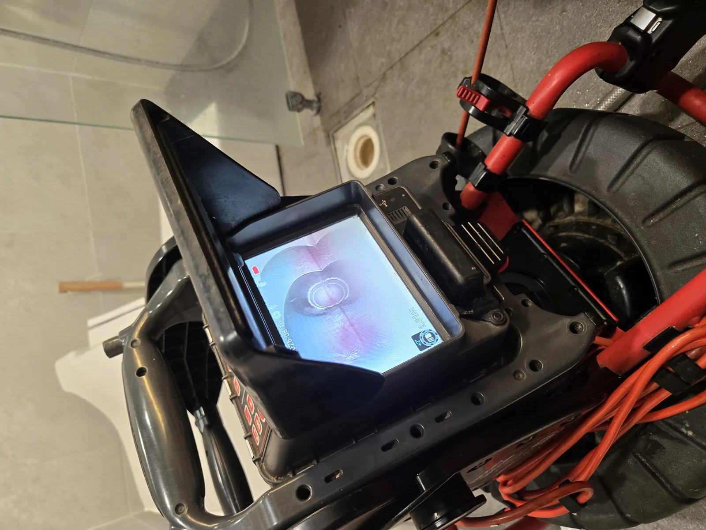

도화동 변기 2곳 동시 역류·공용 오수관 점검
내시경·석션·스프링 관통 작업 후 정화조를 점검하고 펌프로 수위를 낮춰 배수 흐름을 확인했습니다.
SHILLA FIELD NOTES
서울·경기에서 직접 진단하고 해결한 배관 작업 사례입니다.

내시경·석션·스프링 관통 작업 후 정화조를 점검하고 펌프로 수위를 낮춰 배수 흐름을 확인했습니다.

물이 천천히 내려가고 수위가 차오르는 증상을 점검해 배수 통로와 정상 배수를 확인한 기록입니다.

한 번 뚫은 뒤에도 다시 막히던 변기의 원인 구간을 단계별로 확인하고 배수 상태를 점검했습니다.

사용할 때 물이 차오르고 꿀렁거리는 증상을 확인해 연결 배관의 흐름과 재발 가능성을 점검했습니다.